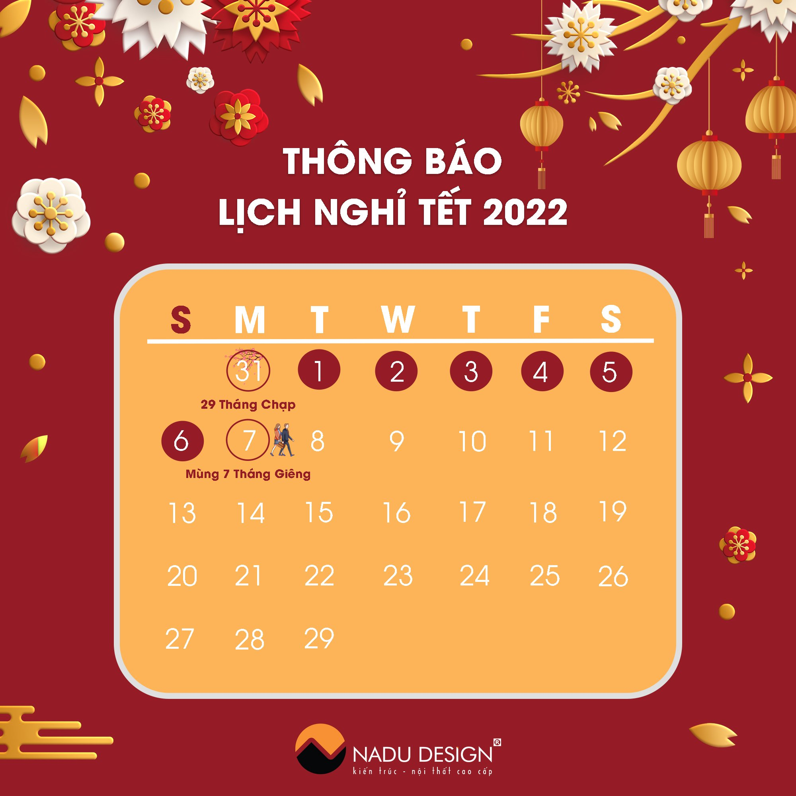

Không khí Tết tràn ngập trong căn nhà phố ở Phú ThọCăn nhà phố sang chảnh ở Phú Thọ của gia đình chị Duyên là một trong những dự án thiết kế - thi công mà NaDu mới hoàn thành và bàn giao lại cho gia chủ trước dịp Tết Nhâm Dần 2022. Dự án nhà phố tại Phú Thọ là một trong những công trình mà NaDu rất tự hào và tâm đắc. Căn nhà hoàn thiện đúng tiến độ thiết kế - thi công và như một món quà mà đơn vị chúng tôi dành trọn tâm huyết trao tặng lại cho chủ nhà. |
|
|  |
Thông báo lịch nghỉ Tết Nhâm Dần 2022
Trước thềm xuân mới, NaDu Design xin trân trọng thông báo lịch nghỉ Tết Nguyên Đán Nhâm Dần 2022 tại đơn vị và kính gửi lời chúc Tết an lành tới toàn thể quý khách hàng và toàn thể đội ngũ cán bộ, nhân viên!
Năm Tân Sửu (2021) đã qua, năm Nhâm Dần (2022) đang gõ cửa, NaDu xin gửi tới toàn thể quý khách hàng, cán bộ nhân viên cùng gia đình năm mới lời chúc: “Sức khỏe – An khang – Hạnh phúc”.
Thông báo lịch nghỉ Tết như sau: |
Nội thất chung cư tân cổ điển có điểm gì thu hút?Xu hướng thiết kế nội thất chung cư tân cổ điển ngày càng được nhiều gia chủ lựa chọn. Nội thất tân cổ đưa ta hòa mình vào không gian ấn tượng, khơi gợi xúc giác và cho phép sự sáng tạo không giới hạn trong các thiết kế. Hãy cùng khám phá xem nội thất chung cư được thiết kế theo phong cách này có điểm gì nổi bật? theo lối tân cổ điển là biểu tượng của sự sang trọng và đẳng cấp. Chính bởi vậy mà đây là lựa chọn hàng đầu của kiến trúc và nội thất biệt thự. Cho đến nay, phong cách thiết kế nội thất này ngày càng được ứng dụng nhiều hơn trong các chung cư có diện tích rộng, chung cư cao cấp. Ngoài ra, phong cách tân cổ điển trong nội thất cũng rất thường xuyên được sử dụng trong các nhà hàng, khách sạn cao cấp mang lại không gian quý phái và tinh tế. Sở dĩ, phong cách này “được lòng” các đại gia là bởi thể hiện đẳng cấp và sự quý phái. |
|
Không gian sang trọng được tạo nên từ những yếu tố nào?
Nhiều người vẫn thường lầm tưởng rằng không gian sang trọng là sự lấp đầy những nội thất đắt tiền vào không gian sống. Điều này là hoàn toàn sai bởi sang trọng vốn là sự hài hoà, thanh lịch, tinh tế từ sâu bên trong. Không gian sống sang trọng mang đến những trải nghiệm đáng giá cho người sở hữu. Không gian này được đánh giá dựa trên những yếu tố căn bản sau đây.
Coi trọng yếu tố cá nhân |
|
Gợi ý cách chọn tủ quần áo nhà chung cư vừa đẹp vừa sangChọn tủ quần áo nhà chung cư sao cho vừa đẹp mắt lại đảm bảo chất lượng không phải là một điều dễ dàng. Vậy làm sao để chọn ra những sản phẩm đáp ứng đầy đủ những yếu tố trên? Tất cả thông tin sẽ có trong bài viết sau đây. Chọn tủ quần áo theo chất liệu và công năng Những mẫu tủ quần áo phổ biến nhất cho nhà chung cư |